ECCV 2026
The idea in one figure
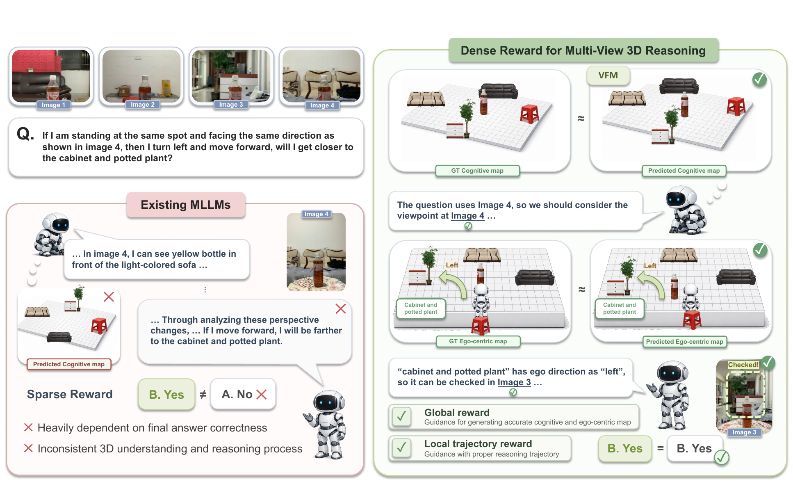
Figure 1. Overview of DR-MV3D. Sparse, answer-level supervision (left) builds inconsistent cognitive maps and misreads egocentric directions, so the model lands on a wrong answer even when the reasoning looks plausible. DR-MV3D (right) supervises the process with dense, verifiable rewards: a global reward aligns the predicted allocentric map with a geometry-consistent target from a frozen VFM, and a local trajectory reward guides ordered viewpoint selection.
Multi-view 3D Visual Question Answering (MV3D-VQA) asks a model to combine partial observations into a coherent 3D scene and to pick informative viewpoints for multi-step spatial reasoning. Current multimodal LLMs are usually trained with sparse, answer-level supervision. This often produces inconsistent cross-view reasoning and brittle view selection. We present DR-MV3D, a map-grounded framework that supplies dense, verifiable rewards to supervise the reasoning process. The approach splits MV3D-VQA into three steps: allocentric global map construction, question-conditioned view-trajectory planning, and egocentric grounding for answer prediction. To make the intermediate steps learnable without manual annotations, we add two rewards. A global consistency reward aligns the predicted map with geometry-consistent pseudo targets from frozen 3D vision foundation models (VGGT and SAM3). A local trajectory reward supervises ordered viewpoint selection. We optimize the full pipeline with trajectory-level policy optimization (GRPO). On MindCube, VSI-Bench, and BLINK (MV), DR-MV3D consistently improves over strong multi-image baselines. Process-level dense supervision is a more effective signal for multi-view 3D reasoning than answer-level optimization alone.
Motivation
The hard part of MV3D-VQA is not getting more images. It is keeping a single, consistent scene representation that supports spatial reasoning. Three problems stand in the way.
Most methods reason in a world-centered map. Many queries are egocentric, asking about viewpoint-dependent relations or hypothetical moves. The two frames drift apart.
MLLMs rarely produce geometrically consistent 3D structure. A frozen 3D VFM (VGGT+SAM3) gives maps that sit closer to the ground truth, so it can act as a reliable structural prior.
A single reward on the final answer says little about a long chain of spatial steps. The reasoning trajectory needs feedback at each step.
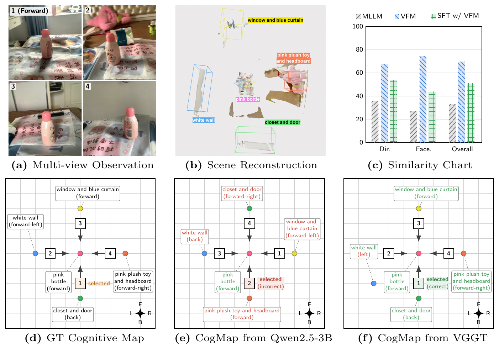
Figure 2. Cognitive maps from a VFM are closer to ground truth. Across directional (Dir.), facing (Face.), and overall scores, a VFM-derived map (VGGT+SAM3) matches the ground-truth map better than an MLLM-generated one (Qwen2.5-3B).
Takeaway: when ground-truth maps are missing, a frozen VFM supplies a reliable pseudo-structural target to learn from.
Method
Step through the pipeline below. Each stage fades in as the reasoning unfolds, and the reward that supervises it lights up.
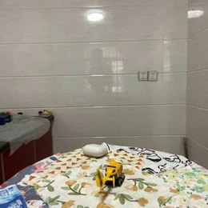
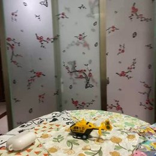
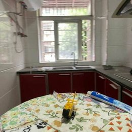
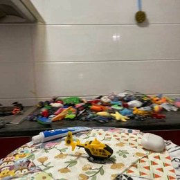
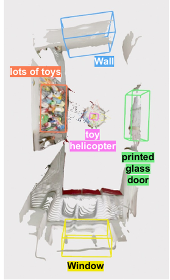
ego_direction=‘back’, so it matches ‘behind’.
Confirming in Image 3: ‘Window’ can be checked in Image 3.”Plays as you scroll in. Use Play / Prev / Next or the dots to step through.
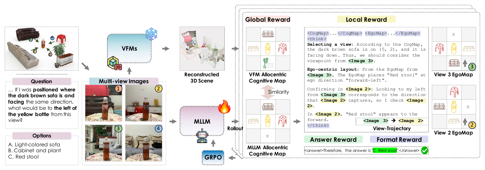
Figure 3. The DR-MV3D framework. From multi-view observations and a question, the MLLM builds a global allocentric cognitive map, plans a question-conditioned view trajectory, and grounds the selected views into egocentric maps to predict the answer. GRPO supervises every stage with multi-level verifiable rewards.
Formally, given multi-view images I = {I1, …, IN} and a spatial question q, the policy πθ produces a trajectory that first builds a coarse allocentric map, then selects views, then grounds them before answering. Each stage below carries its own verifiable reward.
The model aggregates the views into one world-centered map Callo ∼ πθ(· | I) that stays fixed as the camera moves. The trouble is that language-driven maps are often not geometrically consistent. So we read a pseudo-target off a frozen 3D vision foundation model, C* = SAM3(VGGT(I)), and align to it.
Why this matters: the supervision comes from geometry models, not from hand-labeled maps. This is what makes process-level training scale.
Conditioned on the map and the question, the policy autoregressively selects an ordered trajectory V = (v1, …, vT), keeping informative viewpoints and dropping visual noise. A reference order V* is derived deterministically from benchmark metadata (the views that best see the queried objects).
Question: If I am standing at the same spot and facing the same direction as shown in Image 1, what is behind me? (A. Window (GT) · B. Lots of toys · C. Wall · D. Printed glass door)
The query is anchored to Image 1, so the reference trajectory is V* = (Image 1).
ego_direction=“back”, so it matches “behind”.
(3) Confirming in Image 3: “Window” can be checked in Image 3. The
direction decision comes from the egomap ego_direction for the asked viewpoint.
(4) Therefore, the answer is “A. Window”.
</think>
The local trajectory reward grades which view the model reads, and in what order. Reading the queried view is exactly what lets the egocentric map resolve “behind” to “Window” instead of “printed glass door”.
Why this matters: it scores the order of looking, not just the final answer, so the model learns to gather the right evidence before committing.
For each selected view the model converts global evidence into a viewpoint-aligned egocentric map Cegot ∼ πθ(· | Callo, vt, I, q) through coordinate rotation, spatial filtering, and reference-frame alignment. MLLMs are pretrained mostly on egocentric, view-aligned data, so translating the abstract 3D layout back into that native format is where the answer becomes reliable. The final answer is read from the trajectory-conditioned egocentric evidence.
Answer-only rewards are too sparse, so we add the two process rewards and optimize the whole trajectory with GRPO (no separate value model):
Since Rglobal can use the VFM pseudo-target instead of an annotated map, the method also runs annotation-free and still beats strong baselines.
Results
| Method | Params | Rotation | Among | Around | Overall |
|---|---|---|---|---|---|
| Proprietary models | |||||
| GPT-5 | – | 94.5 | 38.2 | 68.4 | 56.3 |
| Gemini-2.5-Pro | – | 85.0 | 49.2 | 58.3 | 59.3 |
| Open-weight multi-image models | |||||
| Qwen2.5-VL-Instruct (baseline) | 3B | 34.0 | 36.0 | 45.2 | 37.8 |
| Spatial-MLLM | 4B | 32.5 | 47.5 | 35.0 | 42.8 |
| MindCube-CGMap-SFT | 3B | 34.5 | 54.2 | 70.8 | 54.4 |
| Think3D (Qwen3-VL-RL) | 4B | 41.7 | 35.0 | 39.2 | 41.7 |
| DR-MV3D (SFT) | 3B | 42.0 | 66.3 | 69.2 | 62.4 |
| DR-MV3D (SFT + GRPO) | 3B | 43.0 | 71.3 | 73.6 | 66.5 |
Accuracy (%). Our 3B model posts the best overall score among open-weight baselines, a 28.7%p gain over the Qwen2.5-VL-3B baseline.
| Method | Route Plan | Rel. Dir. | Rel. Dist. | App. Order | Avg |
|---|---|---|---|---|---|
| LLaVA-OneVision-7B | 29.4 | 35.2 | 42.5 | 24.4 | 32.9 |
| InternVL2-8B | 28.9 | 33.4 | 38.0 | 46.4 | 36.7 |
| Qwen2.5-VL-3B-Instruct (baseline) | 27.3 | 43.8 | 25.9 | 24.4 | 30.4 |
| DR-MV3D (SFT) | 30.9 | 43.9 | 35.1 | 26.9 | 34.2 |
| DR-MV3D (SFT + GRPO) | 32.4 | 46.6 | 37.8 | 31.4 | 37.1 |
Accuracy (%). Dense-reward training carries over to sequential, navigation-style evaluation, raising the average by 6.7 over the 3B baseline.
| Method | BLINK (MV) |
|---|---|
| Proprietary models | |
| Gemini-2.5-Pro | 44.9 |
| Doubao-1.5 | 50.9 |
| Open-weight models | |
| Qwen2.5-VL-3B (baseline) | 42.1 |
| Spatial-MLLM | 56.0 |
| Think3D (Qwen3-VL-4B-T3RL) | 53.4 |
| DR-MV3D (SFT) | 54.9 |
| DR-MV3D (SFT + GRPO) | 56.4 |
Accuracy (%). Best result among open-weight models, ahead of the 3B baseline by 14.3.
| Config | Allo. | Traj. | Ego. | Overall |
|---|---|---|---|---|
| Vanilla Qwen2.5-VL-3B | ✗ | ✗ | ✗ | 37.8 |
| + Allocentric map | ✓ | ✗ | ✗ | 52.8 |
| + Trajectory | ✗ | ✓ | ✗ | 58.2 |
| Full SFT | ✓ | ✓ | ✓ | 62.4 |
| Rewards | Global | Local | Overall |
|---|---|---|---|
| Answer & format only | ✗ | ✗ | 63.8 |
| + Global | ✓ | ✗ | 64.9 |
| + Global + Local | ✓ | ✓ | 66.5 |
Main message: each piece helps. The global reward adds geometry, and the local reward adds the right viewing order. Together they take GRPO from 63.8 to 66.5.
Qualitative
Each example shows the real multi-view input, the VFM scene, and the cognitive map (rendered here as live SVG from the paper source). The baseline reasons itself into the wrong object; DR-MV3D selects the right view and grounds the answer in its egocentric map.
ego_direction=“back”, so it matches
“behind”. (3) Confirming in Image 3: “Window” can be checked in
Image 3. The direction decision comes from the egomap ego_direction for the asked
viewpoint. (4) Therefore, the answer is “A. Window”.
</think>
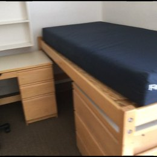
1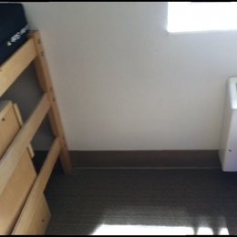
2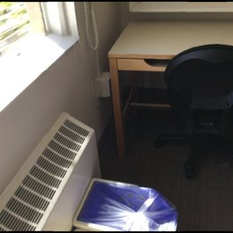
3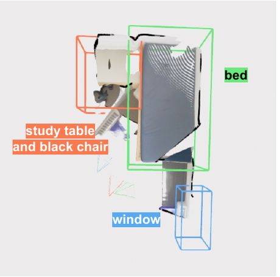
ego_direction=“right”, so it matches “right”.
(3) Confirming in Image 2: “Window” can be checked in Image 2.
(4) Therefore, the answer is “C. Window”.
</think>
@inproceedings{choi2026drmv3d,
title = {Dense Reward for Multi-View 3D Reasoning with Global Maps and Local Views},
author = {Choi, Jiho and Lee, Seonho and Park, Seojeong and Shim, Hyunjung},
booktitle = {European Conference on Computer Vision (ECCV)},
year = {2026}
}